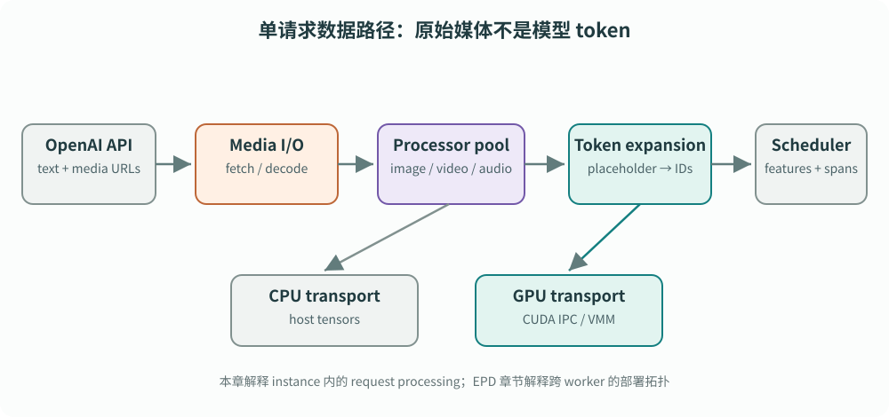
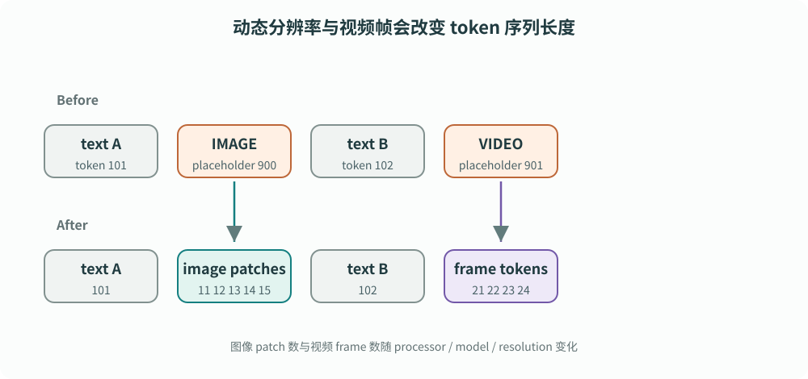

第 24 章 · SGLang 生产推理机制
Multimodal Processing：Media I/O、Token Expansion 与 Feature Transport
深入 SGLang 的图片、视频、音频请求路径：媒体加载、processor worker、token placeholder expansion、M-RoPE 与 CPU/CUDA feature transport。
深入 SGLang 的图片、视频、音频请求路径：媒体加载、processor worker、token placeholder expansion、M-RoPE 与 CPU/CUDA feature transport。 本章将论文中的算法背景、SGLang 当前实现、可复现的教学抽象与硬件限制分开说明。实现断言固定到 2026-11-23 的上游快照，不能把兼容表当成永久承诺。
读完本章，你应该能
- 画出从输入数据到运行时执行路径的关键对象。
- 解释数学近似、内存布局和 kernel/backend 之间的约束。
- 用 CPU-only toy 实验检查边界，而不把教学代码误称为 GPU 实现。
1. 多模态 API 的 content parts 不是 token 序列
OpenAI-compatible vision API 接收交错的 text 与 image_url content parts。客户端提交的是媒体引用和文本，不是模型最终看到的 patch token IDs。不同模型可能把一张图变成多 crop、多 patch 或不同分辨率的视觉特征；视频则先有帧与时间信息，音频还有采样率、chunk 等元数据。因此服务端必须先解析媒体，再调用模型专属 processor，最后把特征与 token positions 对齐。不能把 JSON 里的一个 image item 当成模型里一个 token。
2. Media I/O：读取、解码与资源边界

当前 token-space processor 接受 image/video/audio raw data 与 caller input_ids。它先校验媒体来源，再加载媒体列表、整理 modality items 和 per-item preprocessing kwargs。视频 item 可能持有 decoder wrapper，任务完成后需要关闭 decoder，即使某个 item 处理失败也不能泄漏其他 decoder。
生产环境还要考虑 URL allowlist、最大文件大小、超时、本地媒体访问开关和恶意文件风险。媒体处理不是“随便对一个 URL 做 requests.get”；它是带资源上限的输入解析路径。
3. Processor workers：并发不是共享同一个可变对象
SGLang 的 `MultimodalProcessorMixin` 可以构造多个 processor worker。每个 worker 通过 `copy.deepcopy` 获得隔离的 processor clone；如果 processor 不能安全 clone，则回退到同步处理。这样做是为了避免多个线程同时修改同一个 Hugging Face processor 的内部状态。Worker 数量会影响 CPU decode/preprocess 的排队与内存占用；它不是 GPU batch size，也不保证处理越并行越快。若处理器内部调用 GPU，线程还必须绑定到正确的 device，避免新线程默认落到 cuda:0。
4. Token-space expansion：placeholder 如何变成一串 token

Token-space processor 收到 caller input_ids，其中每个 media 位置只有一个 placeholder。Processor 返回每个媒体对应的 token expansion spec；`expand_token_placeholders` 按 placeholder 位置把对应 token run 插入原序列。已扩展的 prefix 可通过 `mm_token_expansion_start_len` 保留；只处理其后的 placeholder。插入的 token 不会再次扫描，避免递归扩展或错位。
一个图片的 expansion length 可能因分辨率、crop 策略、模型架构而变；视频 expansion 还会随 frame count 变化。因此序列长度、position IDs 和多模态 spans 必须一起更新。
源码：expansion.py。
5. Feature tensors 如何交给 Scheduler
Processor output 不一定留在同一设备。当前 feature transport 支持 `cpu`、`cuda_ipc` 和 `cuda_vmm`。CPU 路径把 feature tensors 移到 host；CUDA IPC/VMM 路径可以让 processor output 留在 GPU，并通过 transport proxy / pool handle 交给 scheduler。Pool miss 时可能回退到 CPU tensor。这条路径涉及 tensor lifetime、IPC lease、pool capacity 和消费者数量。它不是 Mooncake 的跨节点 KV transfer，也不是 EPD 把 Encoder、Prefill、Decode 拆到独立 worker；本章讲的是单次多模态请求内部 feature 如何交付。
6. M-RoPE 与多模态位置：顺序之外还有时间和空间
视频和高分辨率图像不仅增加 token 数，还可能改变位置编码的结构。部分模型用 multimodal RoPE 表示时间、行、列等轴；processor 需要提供对应 metadata 或位置结构，模型侧才能把视觉/音频 token 放到正确的位置关系中。所以“把 image patch tokens 拼进 input_ids”只是最简化的描述。真实实现还要维护 modality type、span boundaries、position indices、frame timestamps 和模型专属 feature fields。
7. 和 EPD 的边界：请求处理 vs 部署拓扑
第 15 章的 EPD 讨论 Encoder、Prefill、Decode worker 如何独立部署与扩缩容；本章讨论的是一个请求在 server instance 内怎样读取 raw media、调用 processor、扩展 token 并传递 features。二者可以组合，但不能把 CUDA IPC feature transport 误写成跨节点 EPD 网络传输。同理，multimodal preprocessing cache、EPD embedding cache 与 HiCache KV pages 是不同对象。前者缓存预处理结果或媒体特征，后者缓存 language model 的 K/V tensor。
8. 失败边界：输入长度、媒体资源与并发预算
一个 request 可能包含多个 image、video frames 和 audio chunks。每个 item 都可能触发解码、预处理、显存分配和 token expansion。需要监控 media I/O queue、processor queue、worker memory、feature transport pool、token expansion length 和 request cancellation。若只调大 processor worker 数，可能把瓶颈从 CPU 排队移动到 GPU preprocessing、CUDA IPC pool 或模型 prefill。调优应从端到端 request trace 出发。
9. 交互：比较不同媒体的 token expansion
Multimodal input shape
Image：一张图片可能经过 resize/crop/patchify，展开为多个视觉 token。resolution 与模型 processor 决定实际数量。
Video：先解码成有序 frames，再按帧处理与扩展。帧数和时间戳影响 token count 与 temporal position。
Audio：需要采样率、chunk/feature 等音频特定处理；不能把音频输入简单替换成图像 patch 序列。
运行 multimodal_pipeline.py，检查 placeholder 数量、token expansion 与 CPU/GPU transport mode。它不执行真实媒体解码。
10. 源码阅读路线与参考资料
- OpenAI Vision API：客户端 content parts。
- TokenSpaceProcessor：raw media 到 model inputs。
- expand_token_placeholders：placeholder splice。
- feature_transport.py：CPU/CUDA IPC/VMM delivery。
实现快照：sgl-project/sglang@563813c0d60282fa848382fec600b40d28ddec98。EPD 的跨 worker 拓扑另见第 15 章。